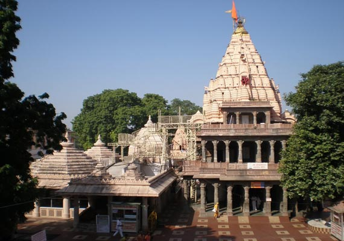

Mahakaleshwar, Madhya Pradesh
One of the most prominent temples of Lord Shiva in the country is Mahakaleshwar Temple in Ujjain, Madhya Pradesh. The temple is a Swayambhu Jyotirlinga and Lord Shiva is worshipped in the form of Mahakal, the Lord of death, in this sacred shrine.